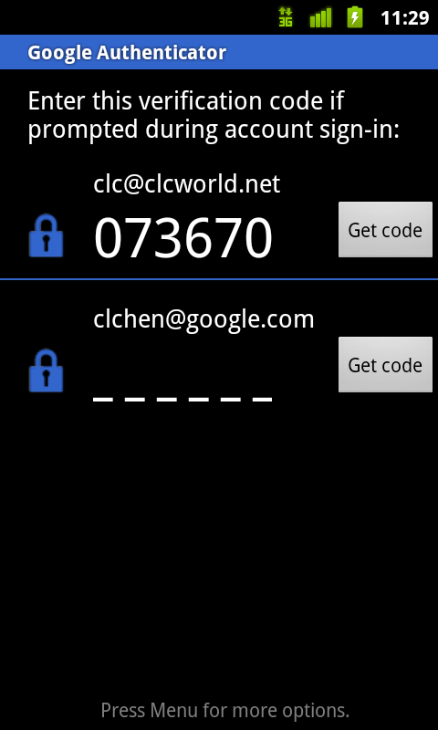

Leveraging Android Accessibility APIs To Create An Accessible Experience
May 10, 2011
Google I/O 2011
May 10, 2011
Google I/O 2011
| Project | http://eyes-free.googlecode.com |
| T. V. Raman | raman@google.com |
| Charles L Chen | clchen@google.com |
| Tim Credo | credo@google.com |
| Blog | http://eyes-free.blogspot.com |
Please provide us feedback:
| Feedback | http://goo.gl/AjOLf |
| #io2011 #android #eyesfree |
AccessibilityEvents
AccessibilityEvents depending on their types (selected, clicked,
etc.)
ViewAccessibilityEvents during user interaction
ViewsImageButtons, are labeled with
contentDescription
Views Extended from Standard ViewsView speaks, override
dispatchPopulateAccessibilityEvent
ViewsView Class)dispatchPopulateAccessibilityEvent
Views (More) AccessibleUserRowView is a custom View that displays the username, the generated code, and a "Get code" button

View; Android's platform accessibility tries to do what it can.
dispatchPopulateAccessibilityEvent
UserRowView class
UserRowViewpublic boolean dispatchPopulateAccessibilityEvent(AccessibilityEvent accessEvent) { Context ctx = this.getContext(); String message = ""; CharSequence pinText = ((TextView) findViewById(R.id.pin_value)).getText(); if (ctx.getString(R.string.empty_pin).equals(pinText)){ message = ctx.getString(R.string.counter_pin); } else { for (int i = 0; i < pinText.length(); i++) { message = message + pinText.charAt(i) + " "; } } CharSequence userText = ((TextView) findViewById(R.id.current_user)).getText(); message = message + " " + userText; accessEvent.setClassName(getClass().getName()); accessEvent.setPackageName(ctx.getPackageName()); accessEvent.getText().add(message); return true; }
Views that are already accessible by default
Extra Credit: All tasks can be completed efficiently
| Feedback | http://goo.gl/AjOLf |
| #io2011 #android #eyesfree |